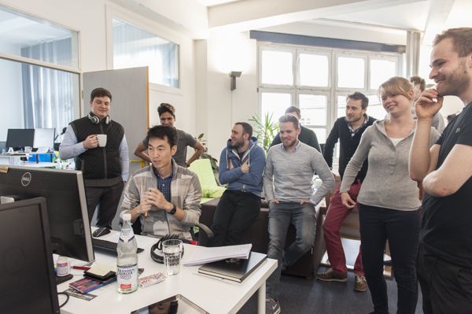

-
Backend developer at Modn, 2017.07
-
Backend developer at Modernlab, 2017.04 ~ 2017.07
-
Backend developer at Truffls, 2016.03 ~ 2016.09 https://truffls.de/en/

Django admin에 신규 기능 추가후 소개, Truffls

직원 기념 사진, Truffls
- QA Engineer at Delivery, 2015.06 ~ 2016.03 https://www.lieferheld.de/

Tech …